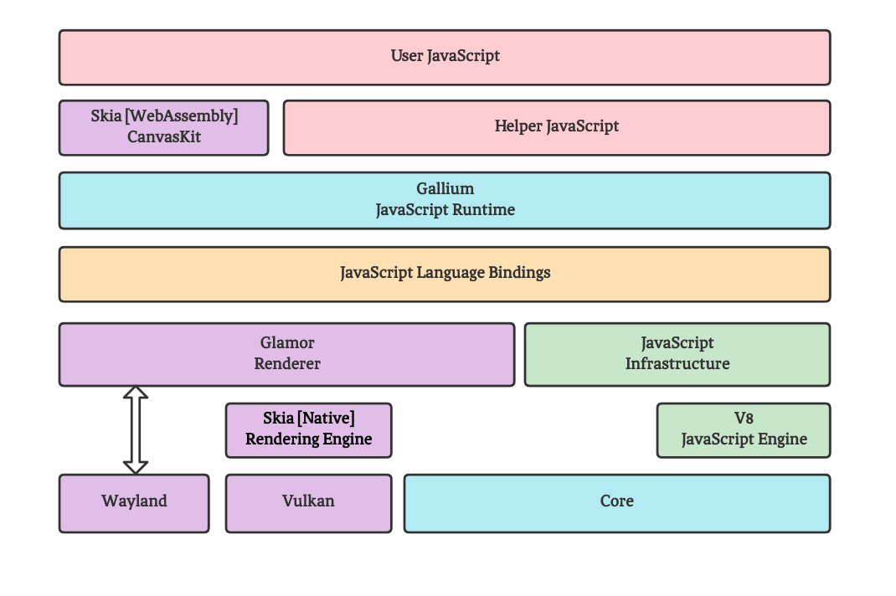

1. Cocoa 项目简介
Cocoa 是一个 Linux 平台通用的 2D 渲染和视觉小说框架， 其灵感来自于视觉小说 ATRI -My Dear Moments- 。 最初 Cocoa 的目标是改善 Linux 平台上的视觉小说体验和探索视觉小说的制作，然而随着开发的进程， Cocoa 已经逐渐转变为一个十分通用的、类似 Flutter 的 2D 渲染引擎。
总所周知，Cocoa（可可）是一种可用于制作巧克力的植物，但是该项目的名称并不取这个意味。 实际上，Cocoa 来自动漫 ご注文わうさぎですか？ 中的角色之一的名字，因此，Cocoa 的发音遵循日语假名「ココア」的发音 kokoa， 但无论如何，将其读作英语中的 Cocoa 也无妨。
Cocoa 本身是一个使用 C++ 编写的 JavaScript 引擎，并内置了图形渲染所需要原生代码， 用户编写的 JavaScript 可以直接在 Cocoa 上运行并调用其图形渲染功能。 这也意味着，Cocoa 本身并不提供任何视觉小说相关的功能， 而是通过一系列由 TypeScript 编写的库来提供编写视觉小说的能力，这些库构建于 Cocoa 原生代码之上，并实现更进一步的特化抽象，提供视觉小说引擎所具备的功能（如剧本解析、场景管理、 存档管理等）。
Cocoa 使用 V8 作为 JavaScript 引擎，Skia 作为绘图后端， 通过把 Skia API 暴露给 JavaScript，来实现 2D 绘制。在此之上，Cocoa 还包含了基于图层树的渲染架构， 以及 Wayland 显示后端、Vulkan 硬件加速等诸多功能。而与 Python turtle 一类的绘图库不同， Cocoa 是真正面向 连续刷新的 2D 动画绘制场景 设计的，更加注重性能。下图展示了整个 Cocoa 的核心架构：
目前，Cocoa 仍然是仅凭兴趣支撑的项目，且仍处于开发之中。 我们欢迎任何 Issue 和 Pull request：GitHub